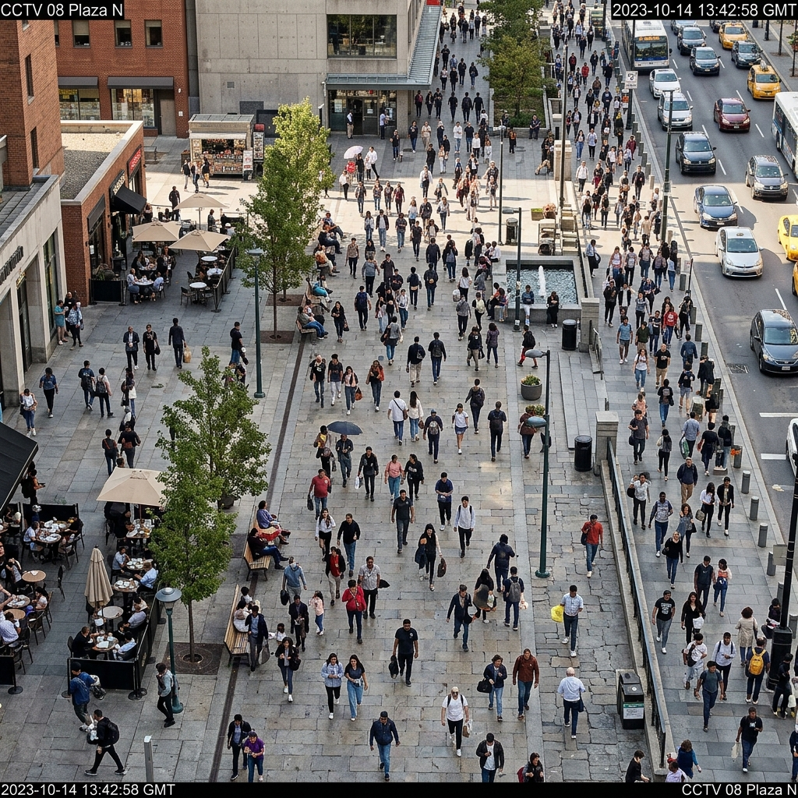

City Command Overview
Real-time BigQuery data sync + Multi-agent automation
Resource Usage & Load Trends
Sector Risk Analysis
Updated 1m agoSector 4: Congestion Spike
Delay time +40% at crossroads. Traffic Agent rerouting active.
Sector 7: Impending Rain Peak
Expected 42mm precipitation. Flood gate sensors on alert.
Sector 1: Utility Balancing
Water distribution stable. Power grid reserve at 22%.
Sector 9: Medical Load
Hospital capacity at 62%. Health Agent reports low viral transmission.
Engine Configuration
LSTM captures complex temporal dependencies; XGBoost handles structured tabular anomalies.
Environmental Modifiers
Forecast Simulation Graph
Solid line: Historical | Dotted line: Model Forecast Overlay
Explainable AI (XAI) Feature Importance
Earth Engine Layers
Select satellite multispectral imagery indexes simulated from Sentinel-2 & Landsat-9.
Temporal Timeline
Geo-Spatial Insights
Vertex AI Vision - Image Analyzer
Gemini-Vision APIDetect garbage overflows, road potholes, and structural damages.
Traffic Camera Analytics
Vertex Video IntelligenceCrowd density and traffic congestion analysis via CCTV feeds.

Vertex AI Speech - Voice Complaint Filing
Speech-to-Text APIPress to simulate an incoming emergency voice report from a citizen.
Incoming Voice Transcript:
Autonomous Operations Pipeline
Sensor / Vision Match
Garbage overflow detected in Sector 3
Alert Authority
Department of Sanitation notified (ID: 992)
Assign Truck
Truck #14 dispatched. ETA: 7 mins
Track Resolution
Awaiting photo verification from truck GPS
Rainfall Sentinel
Rain sensor detects >30mm in Sector 7
Notify Citizens
Automated SMS push alert via Pub/Sub
Sluice Gate Operation
Open Sector 7 emergency discharge gates by 40%
Citizen Issue Reports
AI policy Suggestion Engine
Vertex AI aggregates reports to suggest city improvement codes.